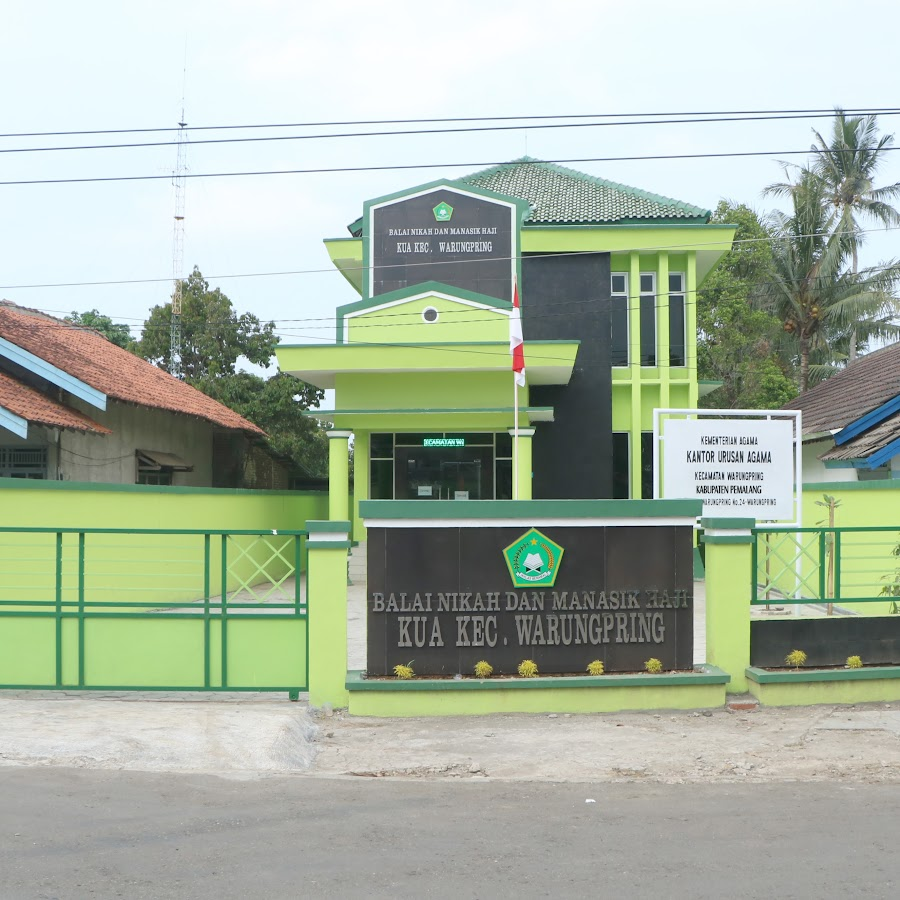

Sejarah Berdirinya
Kantor Urusan Agama (KUA) Kecamatan Warungpring pada awal berdirinya adalah KUA Kecamatan Moga II yang bertempat di desa Warungpring...
Pada tahun 1985 KUA Kecamatan Moga II memperoleh tanah wakaf dari masyarakat desa Warungpring...
Dan pada tahun 2018, KUA Kecamatan Warungpring mendapat bantuan pembangunan gedung Balai Nikah dan Manasik Haji...
Riwayat Kepala KUA Warungpring
Daftar Kepala KUA Kecamatan Warungpring dari masa ke masa.
1
K. Sahnan
1948 - 1952
2
K. Akhmad
1952 - 1955
3
Abdul Djalil
1956 - 1969
4
Djalil Hasyim
1969 - 1981
5
Nuridin
1981 - 1987
6
Hawin Falakhi
1988 - 1989
7
Amar Hawin
1989 - 1994
8
H. Mahmud
1994 - 1995
9
Moh. Sopri
1996 - 1997
10
Mushaffa
1998
11
Ahmad Syaekhu
1998 - 2001
12
Mukhlisin
2001 - 2003
13
Fakihudin
2003 - 2007
14
Marzuqi
2007 - 2009
15
Drs. Nur Ikhsan
2009 - 2011
16
Moh. Ali Nizam, S.Ag
2011 - 2013
17
Jaenal Abidin, S.H.I
2013 - 2017
18
H. Mukhtamiludin
2017 - 2018
19
H. Mutarofik, S.Ag
2018 - 2019
20
Ahmad Mubarrod, S.Ag
2019 - 2023
21
Achya Ulumudin, S.Ag
2023
22
Drs. Munawir
2023 - 2025
23
H. Khosikin, S.Ag
2025
24
Yusuf Wibisono, S.Ag
2025
25
Ariful Umam, S.Ag
2025 - Sekarang